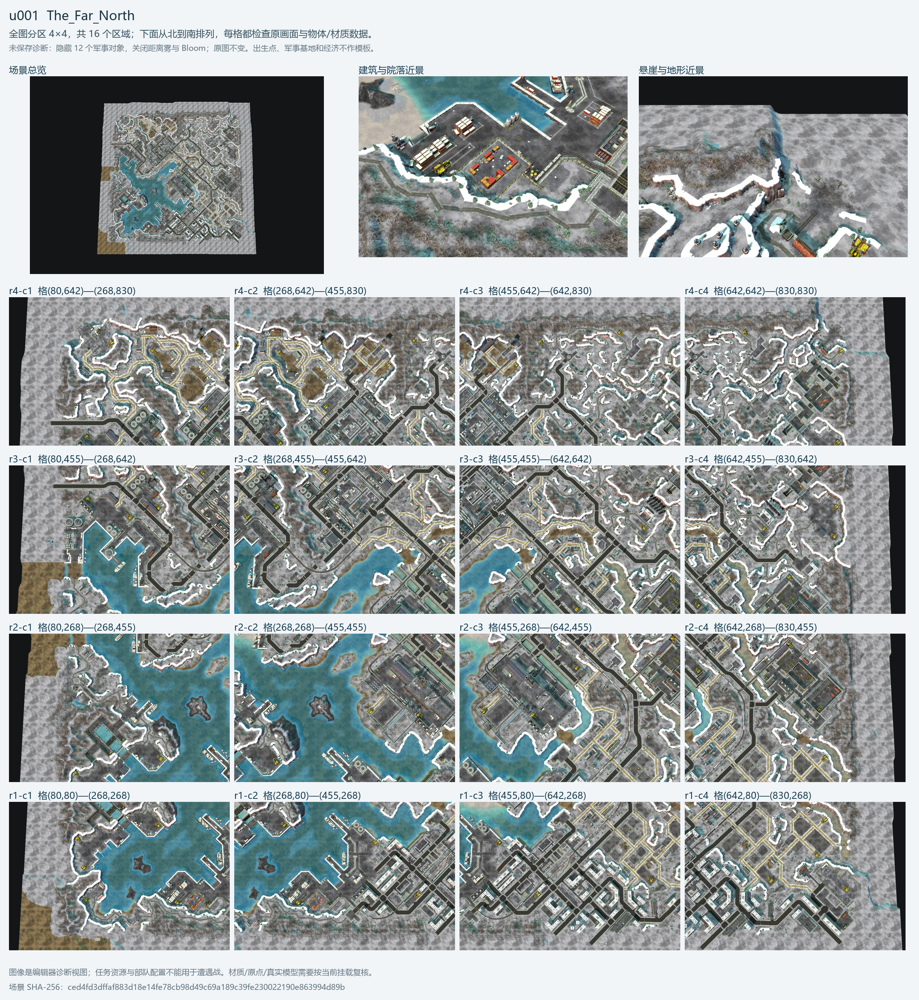
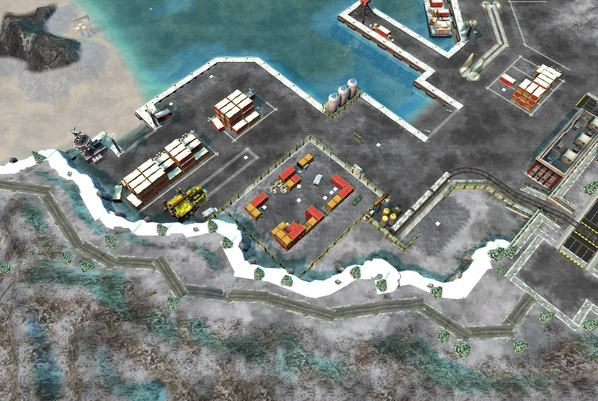
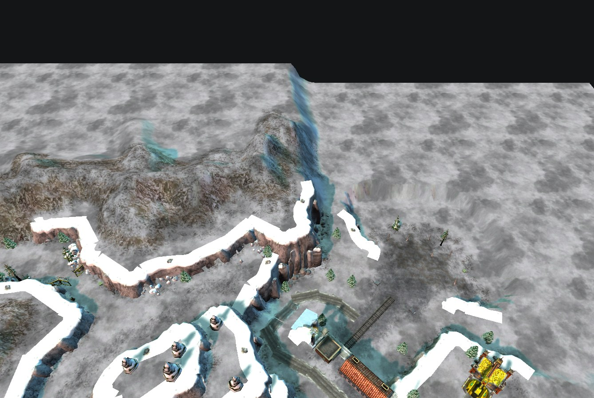

u001 · 冬季港城
The_Far_North
16 分区 · 19 原始视图 · 民房 227 · 悬崖 1100
- 雪覆岩石高地环绕港口和城市平台，水面与码头形成主要留白。
- 仓库、堆场、港口设备沿岸组织；街区由较直的道路和桥接连接，丘陵边缘留雪地与林带。
- 高地岩面、上缘雪面和城市硬质地面分层，而非整块白色平地。
港口军事区不用于遭遇战基地模板；亮白边缘需结合材质和实际渲染复核。
展开全区图册、近景与素材
未保存诊断视图：暂时隐藏 12 个已识别军事物体，关闭距离雾/Bloom/选择标记。中立资源与旧底座可能仍可见，均不作配方。模型数量上限 200 种；游戏内效果另验。



- 民房候选
SV_BuildingPCampShack01、VL_Building03、VL_building04、SV_Building07、SV_BuildingPCampShack02、SV_Building05- 露出地表候选（step=2）
Snow_Solvang01、Snow_Solvang10、Pavement_Solvang01、Pavement_Vlad04、Cliff_Solvang03、Pavement_Vlad05- 悬崖候选
IL_SEACLIFFWALL03、IL_SEACLIFFWALL01、IL_SEACLIFFWALL04、IL_SEACLIFFWALL05、IL_SEACLIFFWALL06、IL_SEACLIFFWALL02- 道路/街沿/标线候选
KremlinSidewalk02、NorthernRussiaDirtRoad01、KremlinDirtRoad01、NewYorkSidewalk04、KremlinBrickTrim01、KremlinSidewalk01、HawaiiRoadMarking02、NorthernRussiaSidewalk01- 功能装饰候选
- cargo：
VL_CARGOCONTAINER01、VL_CARGOCONTAINER02、ST_CARGOCONTAINER01、ST_CARGOCONTAINER02、VL_FORK01、VL_CARGOCONTAINER05
lighting：TH_LAMPPOST04B、SV_StreetLamp01、TH_LAMPPOST04、CS_STREETLIGHT
seating：AM_BENCH、SV_Bench01、ST_CHAIR01
enclosure：ST_SOVIETFENCE04、SA_FENCE17、KR_FENCE03、SP_SNOWYCHAINFENCE04、VL_SeaWall01、SV_Fence01
landmark：KR_STATUE01
查看 16 个区域的坐标与素材分布
| 区域 | 格矩形 x0,y0,x1,y1 | 民房 | 悬崖 | 主要民房 | 局部装饰 |
|---|---|---|---|---|---|
| r4-c4 | 642.5, 642.5, 830, 830 | 11 | 122 | SV_BuildingPCamp02、SV_BuildingPCamp01、SV_Building02、SV_BuildingPCampTower01 | KR_RiverEdge01、SV_TREE01、NY_SEAWALLPIECE03 |
| r4-c3 | 455, 642.5, 642.5, 830 | 11 | 132 | SV_Building06、SV_BuildingPCamp02、Cape_Cod_Light_House_02、SV_Building07 | SV_TREE01、KR_SHRUB03、TH_LAMPPOST04B |
| r4-c2 | 267.5, 642.5, 455, 830 | 11 | 94 | SV_BuildingPCampShack02、SV_BuildingPCamp02、SV_BuildingShack01 | SV_TREE01、KR_FENCE03、IL_BUSH02 |
| r4-c1 | 80, 642.5, 267.5, 830 | 7 | 132 | SV_BuildingPCamp01、SV_BuildingPCampShack02、SV_Building05、SV_Building07 | SV_TREE01、KR_SHRUB03、SP_SNOWYCHAINFENCE04 |
| r3-c4 | 642.5, 455, 830, 642.5 | 11 | 114 | VL_Building03、SV_BuildingPCampShack02、Cape_Cod_Light_House_02、SV_BuildingPCamp01 | SV_TREE01、ST_SOVIETFENCE04、KR_SHRUB03 |
| r3-c3 | 455, 455, 642.5, 642.5 | 26 | 96 | SV_Building07、SV_Building05、SV_Building06、SV_BuildingPCampShack01 | SA_FENCE17、SV_TREE01、IL_BUSH02 |
| r3-c2 | 267.5, 455, 455, 642.5 | 8 | 41 | TH_office_building01、SV_BuildingPCampShack02、SV_BuildingPCamp02 | SV_TREE01、VL_RAIL01、YU_ROADBARRIER01 |
| r3-c1 | 80, 455, 267.5, 642.5 | 3 | 23 | SV_Building07、SV_Building05、NY_Building02 | ST_SOVIETFENCE04、SP_SNOWYCHAINFENCE04、VL_SeaWall01 |
| r2-c4 | 642.5, 267.5, 830, 455 | 8 | 61 | TH_office_building01、SV_Building05、SV_Building07、GI_Warehouse_01 | SV_Bush01、GC_DIVIDER、SV_TREE01 |
| r2-c3 | 455, 267.5, 642.5, 455 | 15 | 52 | SV_Building07、SV_Building05、SV_BuildingPCamp01、SV_BuildingPCamp02 | NY_CIRCLEWALL02、SA_FENCE17、SV_TREE01 |
| r2-c2 | 267.5, 267.5, 455, 455 | 0 | 12 | 未识别到；不推断空地应有建筑 | SP_SNOWYCHAINFENCE04、VL_RAIL01、FI_DeckVentPipe |
| r2-c1 | 80, 267.5, 267.5, 455 | 2 | 74 | SV_BuildingPCamp01、GI_Lighthouse_01 | ST_SOVIETFENCE04、SV_TREE01、GI_SEAWALLPIECE1 |
| r1-c4 | 642.5, 80, 830, 267.5 | 41 | 47 | SV_BuildingPCampShack01、VL_building04、VL_Building03、SV_BuildingPCampShack03 | SV_Fence01、SV_Bush01、KR_FENCE03 |
| r1-c3 | 455, 80, 642.5, 267.5 | 54 | 12 | VL_Building03、VL_building04、SV_BuildingPCampShack01、HV_Apartment01 | SV_Bush01、KR_FENCE01、TH_LAMPPOST04B |
| r1-c2 | 267.5, 80, 455, 267.5 | 16 | 16 | VL_building04、OD_Warehouse01、SV_BuildingPCampShack01、VL_Building03 | ST_SOVIETFENCE04、VL_SeaWall01、SV_TREE01 |
| r1-c1 | 80, 80, 267.5, 267.5 | 1 | 68 | OD_Warehouse01 | SV_TREE01、VL_SeaWall01、ST_SOVIETFENCE04 |
相对来源：北境极地/The_Far_North/The_Far_North.map
SHA-256：ced4fd3dffaf883d18e14fe78cb98d49c69a189c39fe230022190e863994d89b
美化场景组 s001；同签名案例：u001。这是过滤已识别军事/路径点后的相同签名，不是独立风格数。